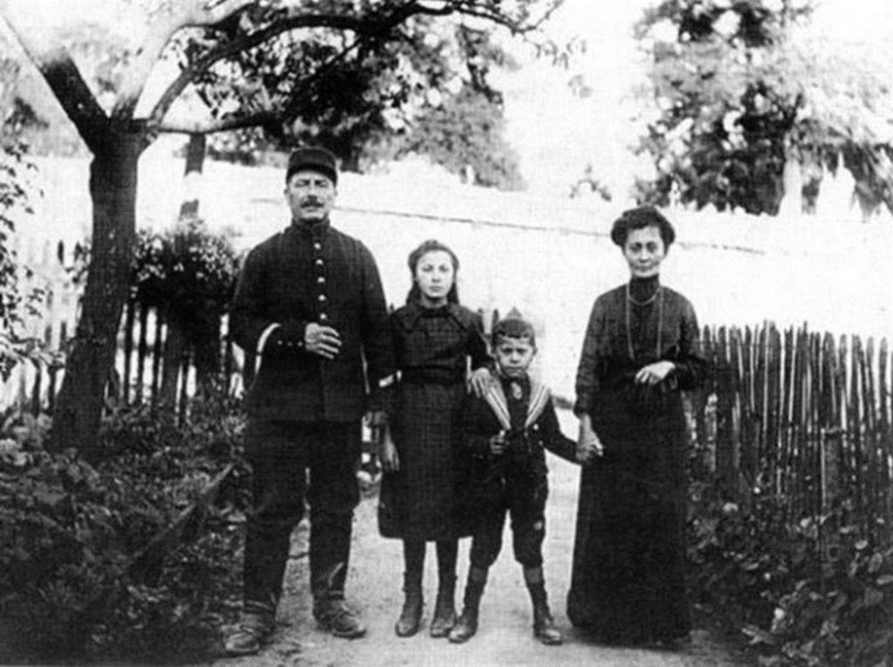

J’ai découvert l’existence des Comores, et de l’ile de Mohéli en particulier, grâce aux témoignages de nombreux amis ayant vécu soit à Madagascar soit à Mayotte. Tous m’ont rapporté leurs récits sur les beautés de l’archipel des Comores. Dans le cadre de ma vie professionnelle, j’ai eu ensuite la chance de rencontrer et d’avoir des collègues et amis d’origines franco-comorienne. Ces rencontres m’ont amenée à m’engager depuis de nombreuses années dans la vie associative en faveur des ressortissants d’Anjouan et de Mohéli. Aujourd’hui, je continue d’œuvrer en faveur de ses iles et tenter de les faire connaitre à mon entourage. Par cette modeste présentation j’espère pouvoir attirer l’attention du futur visiteur sur cette partie de l’océan indien qui mériterait que l’on s’y intéresse de plus près.
L’ile autonome de Mohéli
À la croisée de l’Orient et de l’Afrique, Mohéli fait partie de l’Union des Comores qui est un État souverain sur les trois quarts ouest de l'archipel des Comores, située dans le nord du canal du Mozambique a environ 300 kilomètres des côtes africaines, a 400 kilomètres au nord-nord-est de Madagascar. Mohéli est une destination malheureusement trop méconnue des touristes alors qu’elle recèle de très nombreux atouts.
Avec moins de 300 kilomètres carrés, l’ile autonome de Mohéli est la plus petite île de l’archipel des Comores et mesure moins de 30 km d'est en ouest et de 10 km du nord au sud. L’archipel dénombre quatre iles qui sont connues par leurs noms français, mais elles sont nommées par le gouvernement comorien avec leurs noms comoriens : Ngazidja (Grande Comore), Mwali (Mohéli), Nzwani (Anjouan) (sauf Mayotte qui est un département de la République française). Les 40 000 habitants de l’île de Mohéli à majorité musulmane vivent principalement de la culture d’épices, de l’élevage, et de la pêche.
Mohéli, se trouve à plus de 7900 kilomètres à vol d’oiseau de Paris. Après plus de dix heures de vol direct jusqu’à Mayotte puis un vol inter ile, le visiteur est récompensé, une fois arrivée sur place, par la beauté de ses paysages et la singularité de l’accueil et l’hospitalité de ses habitants qui ne peuvent que séduire les personnes à la recherche de valeurs authentiques.
Les voyageurs en soif de dépaysement seront comblés et trouveront ici la nature la plus fascinante de l'archipel qui soit. Véritable perle des Comores de par la beauté de ses paysages, Mohéli possède des baies isolées avec des plages de sable blanc où viennent se reproduire les tortues vertes. En outre environ 22 espèces d'oiseaux sont propres à l'archipel, et 17 d'entre elles sont limitées à l'Union des Comores.
Le climat est un climat tropical océanique ce qu’il fait qu’elle possède des forêts vierges denses d'un vert profond, de petits villages avec des maisons en argile et de nombreuses plantations d'épices attendent leurs touristes. Les endroits à visiter sur Mohéli sont Nioumachoua, Fomboni (la capitale) dont les récifs sont époustouflants. Pour les adeptes de la plongée sous-marine ce sont deux destinations idéales.
En effet ; Le monde sous-marin de cette île est à couper le souffle et les plongeurs peuvent voir les plus beaux coraux de l'océan Indien dans la zone côtière du Parc National Marin de Mohéli ainsi que nombreuses espèces de poissons colorés ainsi que des tortues de mer vous accompagneront lors de vos plongées.
Les eaux mohéliennes possèdent un lagon partiellement formé, qui renferme des richesses marines exceptionnelles dont le cœlacanthe, un poisson rare avec nageoires ressemblant à des pattes et squelette cartilagineux alors il ne faut pas oublier sa caméra sous-marine. Les moments sont donc propices à la découverte de cet environnement unique.
Aussi, pour toutes ces raisons Mohéli, se révèlera assurément comme une destination idéale pour un voyage de rêve dans l’océan Indien.
Un peu d’histoire
Habitée depuis près de deux millénaires Mohéli a connu au cours de son histoire plusieurs vagues de migrations (1) et à compter de 1785 elle a été régulièrement en proie à des raids d’invasion malgache.
Appartenant au Sultanat d'Anjouan jusqu'au milieu du XIXème siècle elle s'est progressivement développée en une unité politique indépendante. Au même moment au XIXème siècle, nombreux sont les pays européens qui étendent leur empire colonial.
En concurrence permanente avec la Grande Bretagne, la France tente de prendre sa place dans l’océan indien ; où l’archipel des Comores attise leur convoitise. En 1861 et 1871, la France est intervenue militairement dans les conflits internes de l'île qui est de plus en plus sous influence française.
Menacée par le royaume de Madagascar, la reine de Mohéli demande l’aide de la France. C’est l’occasion pour le colonisateur d’assouvir sa volonté qui est celle d’occuper l’ile pour avoir de bons ports et pour priver leurs concurrents coloniaux de cette opportunité. L'occupation française de Mohéli fut bien une conquête coloniale et en 1896 sous la minorité de la Djoumbé Fatima (sorte de Sultane locale) qui est expédiée à la Réunion pour ses « humanités » et la France en profite pour signer un traité de Protectorat (2) avec le conseil des Ministres de Mohéli.
La Djpumbe (ou sultane) Fatima Soudi bint Abderremane, née à Ouallah à Mohéli vers 1836 et décédée en 1878, Elle était la fille de princes malgaches apparentés à la famille royale Merina de Madagascar. Ici photographiée par l’explorateur français Désiré Charnay, le jour de son mariage (forcé) en 1862 avec son mari musulman le prince Saïd Mohammed Nasser M'kadara de Zanzibar, en tenue de cérémonie. Elle se séparera de son mari en faisant intervenir la marine française sur l’île en 1865.
L’ile devient alors colonie de « Mayotte et dépendances », et va être dédiée aux plantations coloniales, de plantes à parfums telle le ylang ylang (très utilisé dans ses huiles essentielles) et de vanille principalement. Plusieurs révoltes ont lieu, en 1899 et 1902, réglées dans le sang (3). En 1904 les îles des Comores sont juridiquement unifiées par décret et lorsque la petite fille de la reine, devenue française par son mariage avec un gendarme français, renonce au trône et supprime le sultanat ainsi qu'à l'ensemble de ses prérogatives ; la France annexe définitivement l'ile en 1912 par une Loi organique de rattachement de toutes les iles des Comores à la France, à partir de l’Administration Française basée à Madagascar. De nombreux comoriens combattrons à côté des français lors de la première guerre mondiale à travers un région de tirailleurs qui se battra avec les Malgaches.

Ursule Salima Machamba, fille de la Djoumbe Fatima, la dernière reine de Mohéli, en compagnie de son mari, le maréchal des Logis de Gendarmerie Camille Paule et de leurs enfants : Louise-Henriette et Louis.
Ursule Salima Machamba, son mari le gendarme Camille Paule et leur fille Louise-Henriette
L'autonomie est partiellement amorcée après la Seconde Guerre Mondiale mais à l’instar de nombreux mouvement insurrectionnels africains, un mouvement indépendantiste comorien apparaît au milieu des années 60 qui aboutit à l'indépendance le 6 juillet 1975.
À cette date Mohéli, les îles d'Anjouan et de la Grande Comore créent la République des Comores (sauf Mayotte, qui décidera de rester Français encore aujourd’hui). En 1991, Mohéli proclame son indépendance, mais ce n'est que le 11 août 1997, lorsque Mohéli rejoint Anjouan, qui avait proclamé son indépendance une semaine plus tôt, que celle-ci obtient une indépendance de fait et rejoint la RFI (République Fédérale Islamique) des Comores.
Son Excellence Mohamed Saïd Fazul, Président de l’Île Autonome de Mohéli et restaurateur de l’Ordre de l’Etoile de Mohéli en 2003 dont il sera le premier grand maître dans l’histoire de l’ordre. Le grand maître de l’ordre porte le seul grand cordon mais qui est frangé d’or en bas.
En 2002, Mohéli ratifie le traité de la nouvelle constitution de l'Union des Comores, qui laisse une plus grande place à l'autonomie des îles. C’est Son Excellence Said Mohamed Fazul qui sera élu une première fois en 2002 pour cinq ans comme Président de l’Île Autonome de Mohéli puis une seconde fois en mai 2016 cette fois-ci comme Gouverneur de l’Île Autonome de Mwali qu’il dirige toujours aujourd’hui.
L’Ordre de l’étoile de Mohéli
L’institution des récompenses, ou plus exactement des marques d’honneur, remonte à la plus haute antiquité. L’humanité, constituée en société, a rapidement éprouvé un besoin de conserver le souvenir des événements honorables et de désigner à l’attention de tous, ceux qui avaient contribué à leur accomplissement et à leur succès.
Premier insigne de l’ordre de l’Etoile de Mohéli en 1851
C’est ainsi qu’en 1851, la Djoumbé Fatima créa l’ordre de l’étoile de Mohéli qui deviendra une magnifique décoration et qui à l’origine ne comportait que les trois grades de chevalier, d’officier et de commandeur. La Djoumbe Fatima voulait une distinction propre symbolisée par un ordre qui devait placer ceux qui la recevaient au-dessus de leurs semblables, en les désignant à leur respect et à leur admiration destinée à récompenser les français et les étrangers qui aidaient Mohéli.
Strictement personnel, non héréditaire, l’ordre devait attirer le respect et l’admiration sur celui qui le porte en sachant qu’il s’agissait d’une « distinction » due à de grands services. L’ordre n’a jamais été un ordre personnel à l’inverse de celui de l’Etoile de la Grande Comore, ni un ordre colonial comme celui de l’Etoile d’Anjouan.
L’ordre devait parer son bénéficiaire d’un prestige moral et, par là même, exalter en principe son désintéressement. Car, si le sens d’une décoration réside dans l’attention que lui attribue le bénéficiaire, il réside également, sinon plus, dans celle que lui reconnaît l’ensemble des membres du groupe social au sein duquel il vit. A l’instar des autres distinctions honorifiques et de l’ordre protocolaire international, l’ordre outre les trois grades : chevalier, officier, commandeur l’ordre fut réorganisé en 1888 et complété des deux dignités de grand-officier et de grand-croix mais ne sera quasiment plus décerné à partir de 1896.
L’ordre de l’étoile de Mohéli disparaitra de facto en 1902. Libéré de l’influence de l’ancienne métropole française en 1975, l’indépendance marque le point de départ d’une reconquête par les comoriens indépendant (hors Mayotte) des éléments de leur identité et ce afin d’accomplir un travail en profondeur pour re conforter l’unité de leur Nation.
Nouveaux insignes de l’Ordre de l’Etoile de Mohéli lors de sa restauration par le Président Mohamed Saïd Fazul en 2003. Le ruban rouge a été remplacé par un ruban rayé rouge et blanc pour éviter toute confusion avec l’ordre de la Légion d’honneur.
Il était alors urgent de se doter d’institutions politiques et administratives qui remplacent celles fonctionnant à l’époque de la présence française. Mais le rétablissement de l’ordre de l’Etoile de Mohéli n'avait pas pu être envisagé dans l’immédiat.
La conviction que la colonisation française avait lourdement influencée sur l’utilisation partisane de l’ordre, l’ordre faisant partie intégrante de l’histoire de Mohéli et devant l’allégresse d’une renaissance légitime de l’ordre de l’Etoile de Mohéli retrouvée, le Gouverneur décida de réhabiliter et rétablir cet ordre.
Il était en effet opportun de se réapproprier cet ordre en lui redonnant toute sa place au sein des distinctions honorifiques comoriennes qui lui revenait de droit.
Aussi avec la mise en place d'un statut d'autonomie et l'élection d'un chef d'exécutif insulaire dans chaque île, les autorités locales ont pu réinstaurer l’ordre de l’Etoile de Mohéli dont le gouverneur (à l’époque Président) Mohamed Saïd Fazul, à l’origine de cette restauration de l’ordre en était logiquement le Grand Maître.
Le premier modèle de la médaille était à six branches avec au centre un croissant surmonté d'une étoile couronnée par le mot " Mohéli ". Un nouveau modèle de médaille beaucoup plus sophistiqué et symbolique a été créé en 2006. Sans conteste, l’ordre de l’Etoile de Mohéli fait aujourd’hui partie des récompenses officielles comoriennes destinés à honorer les mérites profitables à la collectivité et à la souveraineté de l’Île de Mwali.
Nouveau modèle de l’ordre modifié depuis 2006. Il prévoit également la création des dignités de grand-officier (qui se porte avec la plaque de grand-officier et l’insigne d’officier de l’ordre) et de grand-croix (qui se porte avec le grand cordon et la plaque de grand officier de l’ordre).
C’est à ce titre que cet ordre est notamment reconnu en France par la grande chancellerie de la Légion d’honneur.
A.W.
1 Les principaux groupes ethniques qui l'ont composée sont d'origines bantoue, arabe, malaise, malgache et européenne.
2 Le conseil des ministres assemblé et composé de : Fadili ben Attoumani, Mohamed ben Ali, cadi, etc., etc. En l’absence de pouvoir régulièrement constitué , désirant assurer définitivement l’ordre et la tranquillité à Mohéli, propose à M. Gerville-Réache, commandant de Mayotte : Art. 1. — De nommer sultan de l’île le prince Mayani ben Aboudou Shee et offre de placer l’île de Mohéli sous la protection de la France. Art. 2. — Il prend rengagement de ne jamais traiter ni laisser traiter avec aucune puissance étrangère sans l’assentiment du gouvernement de la République française. Art. 3. — Il promet d’accueillir favorablement tous les Français qui voudront s’établir dans l’île et de faciliter l’établissement de tous ceux qui lui seront recommandés par le gouvernement français.Art. 4. — Dans le cas où le sultanat deviendrait vacant, le gouvernement français pourvoira à la nomination d’un autre souverain. Art. 5. — Le Conseil des ministres déclare se soumettre en toutes circonstances à l’autorité du gouvernement français en lui demandant de traiter les Mohéliens avec justice et bonté.Art. 6. — Le conseil s’engage à payer les dettes du prince Abderaman, ex-sultan de Mohéli, jusqu’à concurrence d’une somme de 6,000 piastres et à verser entre les mains de qui de droit la somme de 2,000 piastres pour régler les frais de la guerre. Le prince Mahmoud déclare ne vouloir rien accepter pour lui et se réserve de faire valoir ses droits au trône.Art. 7. — Le conseil des ministres prend en outre l’engagement de faire respecter la personne et les biens de tous ceux qui ont pris part à la dernière guerre et de mettre en liberté tous les prisonniers de la guerre. Faute par lui de se conformer à cette obligation, la personne et les biens de chacun des membres du conseil des ministres répondent de la stricte exécution de la présente clause.Art. 8.— Avant de monter sur le trône, le nouveau sultan devra accepter toutes les clauses de la présente convention. Fait à Fomboni (Mohéli), le 96 avril 1886, en trois expéditions. Le commandant de Mayotte déclare, en présence de MM. Brion, lieutenant de vaisseau commandant du Chacal, de Leslrac, sous-commissaire de la marine, Sicard, Gautier et Lesquivit, enseignes de vaisseau ; Deslandes, médecin de 2ème classe de la marine, et de M. R. Sunley, propriétaire à Fomboni, accepter les propositions qui lui sont faites ci-dessus, sous la réserve de la ratification du gouvernement de la République française. Fait à bord du Chacal, en trois expéditions, le 26 avril 1886. Ont signé : Les Ministres. Gerville-Réache, commandant de Mayotte. (Signatures des témoins). Acte signé le 2 décembre 1886 par le Sultan de Mohéli Je, soussigné, sultan Mardjani ben Aboudou Chéli, déclare avec mes ministres que nous ne donnerons jamais à un étranger soit Français, soit Anglais, Allemand ou d’autre nation, de terre pour y travailler qu’avec l’autorisation et le consentement du gouverneur de Mayotte, c’est-à-dire du commandant de Mayotte Fait à Fomboni.Signatures des ministres. Signé : Mardjani, Ben Aboudou Chéli, Approuvé par le commandant de Mayotte. This entry was posted in Anonyme, traités coloniaux, Zanj et Swahili by Simon Pierre. Bookmark the permalink. Simon Pierre, diplômé d'histoire médiévale et de relations internationales, vous fait découvrir le monde de l'Islam par des textes anciens.
3 Abdelaziz Riziki Mohamed, Comores : les institutions d'un État mort-né, L'Harmattan, 2001.
Partager cette page